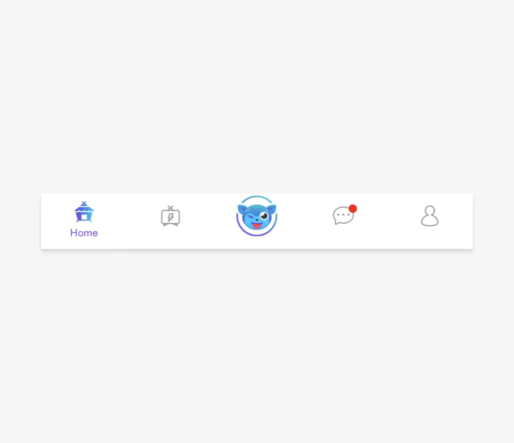

Home
Fixing Broken Windows
Broken Window Theory and why fixing broken windows matters in design
In 1982, James Wilson and George Kelling wrote about an idea that later became known as the Broken Window Theory. This theory suggests that visible signs of disorder, such as broken windows in a neighborhood, can contribute to an increase in crime and a decline in community well-being.
The theory says that if a broken window isn't fixed in a building, it shows that nobody cares about that place. This can make people think the area is neglected and lacks control, which makes it easier for serious crimes and bad behavior to happen.
And, that if communities take care of small signs of disorder and fix broken windows, graffiti, or other signs of neglect quickly, they can make things more orderly and in control. This can stop bad behavior and make people feel safer and better.
Just like disorder in a neighborhood is bad, ignoring small problems in a digital product can convey a sense of neglect, contribute to a negative perception of the product, and make the user experience worse.
In UX, we can think of these as small usability issues — elements that make the user experience less smooth or confusing. Things like unclear buttons, broken links, or inconsistent design elements.
The Power of Fixing Broken Windows
Fixing these broken windows has remarkable potential in product development:
- User Satisfaction. Even small inefficiencies can compound frustration for users who perform repetitive actions daily. Fixing these seemingly insignificant issues is powerful, often more so than creating new features. By addressing user feedback and making quick wins to improve the user interface or usability, we can significantly enhance customer satisfaction.
- Improved Usability. Fixing broken windows leads to an improved user experience by enhancing the usability of a product. When we address minor issues, such as confusing buttons or unclear instructions, we make the product easier and more intuitive to use. This, in turn, reduces user frustration and increases their confidence in navigating the product.
- Increased Engagement. When users encounter fewer obstacles and frustrations in using a product, they are more likely to engage with it. By optimizing the user experience, we can encourage users to spend more time interacting with the product, exploring its features, and achieving their goals. Increased engagement can lead to higher user retention and improved business outcomes.
- Enhanced Trust and Loyalty. By promptly fixing broken windows, we demonstrate our commitment to delivering a high-quality product and show that we value our users' experience. This builds trust and fosters loyalty among users, as they see that their feedback is acknowledged and acted upon. Satisfied users are more likely to recommend the product to others, further strengthening brand reputation and attracting new customers.
- Business Growth. Fixing broken windows can have a positive impact on the overall success of a business. When users have a seamless and enjoyable experience, they are more likely to become repeat customers, leading to increased sales and revenue. Additionally, satisfied customers often serve as brand ambassadors, promoting the product through word-of-mouth and social media, contributing to organic growth and expanding the customer base.
Fixing Broken Windows at Kumu
Last year, Kumu's Product Design team focused on fixing broken windows. Below are some we fixed:
Navigation Icons
Before
Customer support and usability testing revealed that users were unfamiliar with our menu icons and relied on trial and error to find the desired content.
After
Persistently showing menu items' labels enabled a more understandable “navigation” experience.
Contrast & Legibility
Before
Users had difficulty reading low-contrast text. They also confused unselected toggles for disabled toggles because the grays were too light.
After
We removed tiny, low-contrast text and went from light grays to darker ones (for both font and toggles). These went a long way toward legibility and usability.
Notifications
Before
Users frequently complained that Kumu's notifications were spammy. Configuring their Notification Settings was possible but the feature was buried deep under Profile Settings.
After
By adding an access point to Notifications Settings at the top-right of the Notifications page, notification preferences was always just a tap away.
Video Posts
Before
When scrolling through the feed, users saw large, white margins in video posts and had to tap on the videos to watch them.
After
Videos were resized to fill the screen's width, and configured to auto-play when it scrolled into view.
Icon Consistency
Before
Kumu used different icon styles across its interface. This created an inconsistent experience, degrading brand perception.
After
Icons were redrawn in a consistent style. Guidelines standardized when to use an outline icon (unselected states) vs a filled icon (selected states). Even updating just the most visible icons—navigation icons—was a big improvement. (An 80/20 effort.)
Button Consistency
Before
Kumu's primary button style varied greatly across the app interface further creating inconsistency.
After
Kumu Blue (#499CE4) was standardized as the only color of primary buttons—no more gradients! A consistently designed and more recognizable primary button reduced users' cognitive load.
Before
Kumu's primary button style varied greatly across the app interface further creating inconsistency.
After
Kumu Blue (#499CE4) was standardized as the only color of primary buttons—no more gradients! A consistently designed and more recognizable primary button reduced users' cognitive load.
Livestream Controls - Minimize/Close
Before
Kumu's livestream interface had the Minimize and the Close actions beside each other which frequently caused users to accidentally close a livestream when they intended to minimize it.
After
Minimize (far left) and Close actions (inside kebab) were separated. Users were given two options to close a stream but both needed two taps to perform: (1) tap Minimize and tap Close and (2) tap kebab and tap Close livestream.
Livestream Controls - Like/Gift
Before
Kumu's livestream interface had the Like and the Gift actions beside each other which frequently caused users to accidentally send a gift (which cost money) when they were just spamming the livestream with likes.
After
Icon buttons were increased in size for better usability and were updated to align with the new designs. The Like button was removed and replaced with the ability to double-tap anywhere on the screen to "like" the livestream.
Gradient Removal

Before
Kumu's user interface featured gradients based on its brand colors. These gradients often provided poor contrast when used as background to a white font.
After
We removed gradients from the interface and used solid, brand colors that provided good contrast. We used larger buttons to improve usability as well.
Wallet Dark Mode
Before
The Wallet screen was the only screen in our whole app that used dark mode—no one knew why. It felt very inconsistent with the whole experience. The copy also used brand colors which contrasted poorly against the dark interface.

After
Dark mode was removed from the Wallet. Solid brand colors were used instead of gradients. Brand colors were also not used in the copy, prioritizing color contrast and readability.
Incremental improvements are key to success in product development. By recognizing that addressing broken windows with these quick wins can yield significant results, we can enhance user satisfaction, improve usability, boost engagement, and enhance trust and loyalty.
Getting into the habit of constantly fixing broken windows can improve your brand, set you apart from competitors, and show users that you listen to them and that they can trust you. Most importantly, it helps improve your product and the lives of your users.
Key Learnings
- Small inefficiencies or inconveniences almost always go unreported. Users just get accustomed to it—a sort of "learned helplessness". So, relying exclusively on user feedback or customer tickets is not always helpful. Identifying these small inconveniences will require a deeper understanding of user behaviors and habits.
- Making things accessible is difficult. It requires a lot of attention and resources—which may not always be available to small teams.
- Design changes like these often seem like vanity work. Getting them prioritized in the team's backlog is often hard work—requiring constant communication and collaboration with product and engineering stakeholders.